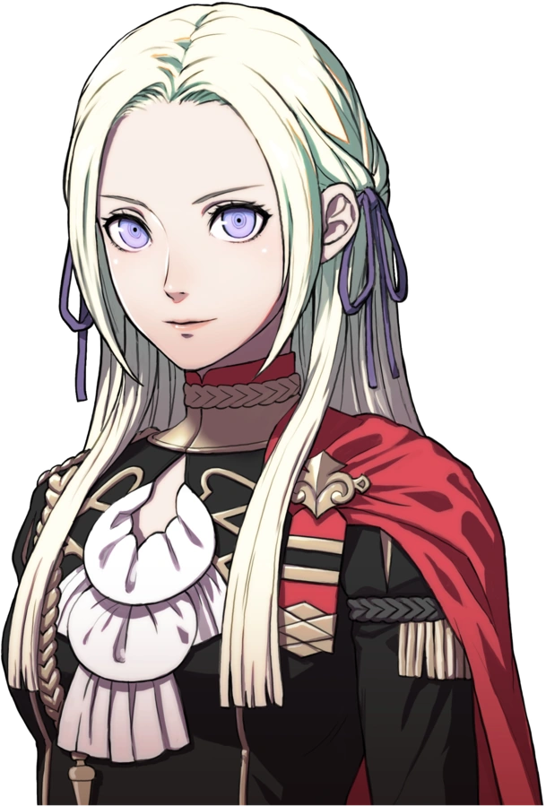
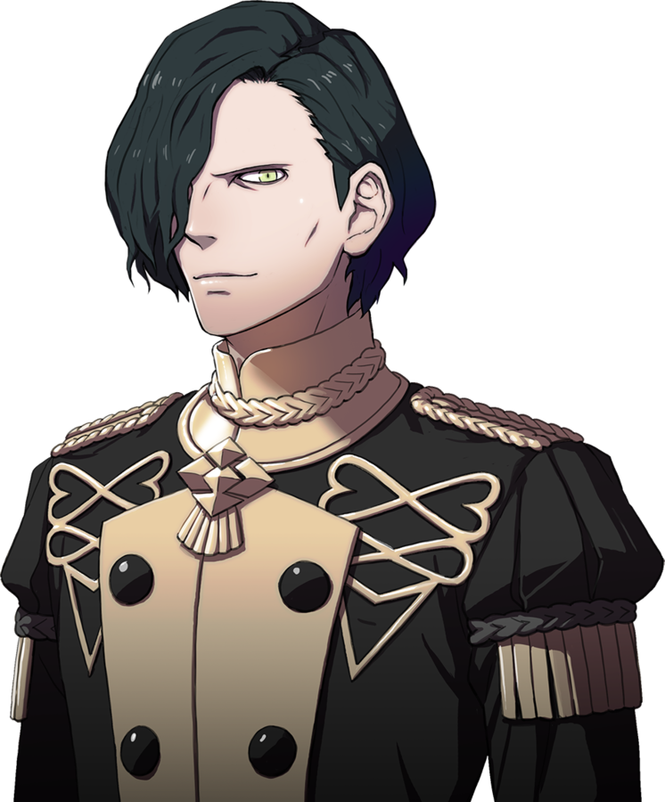
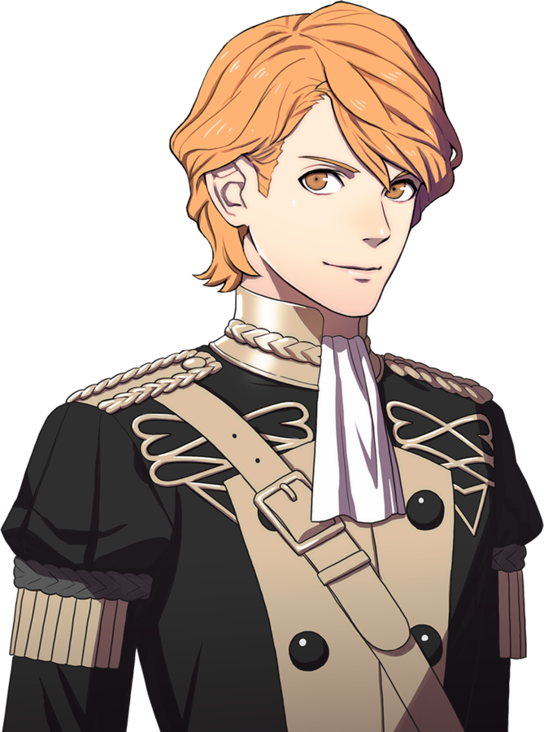
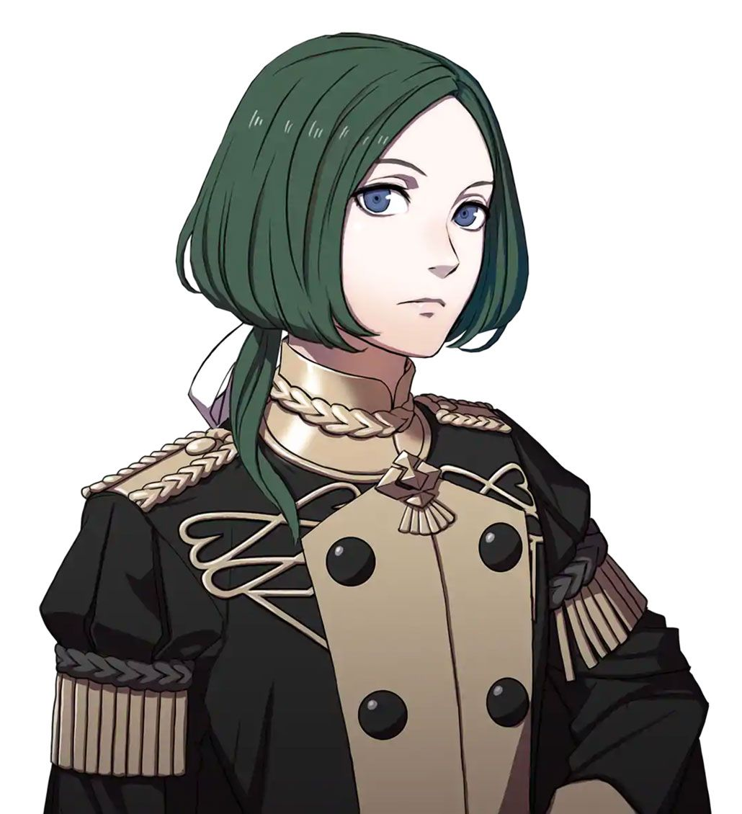
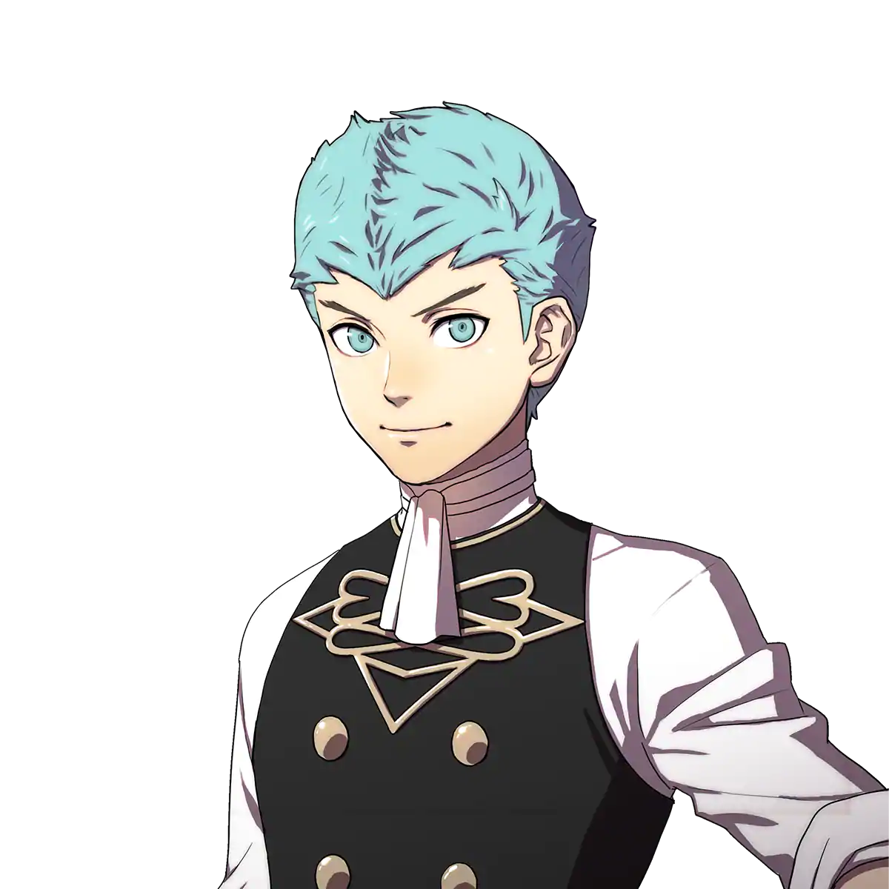
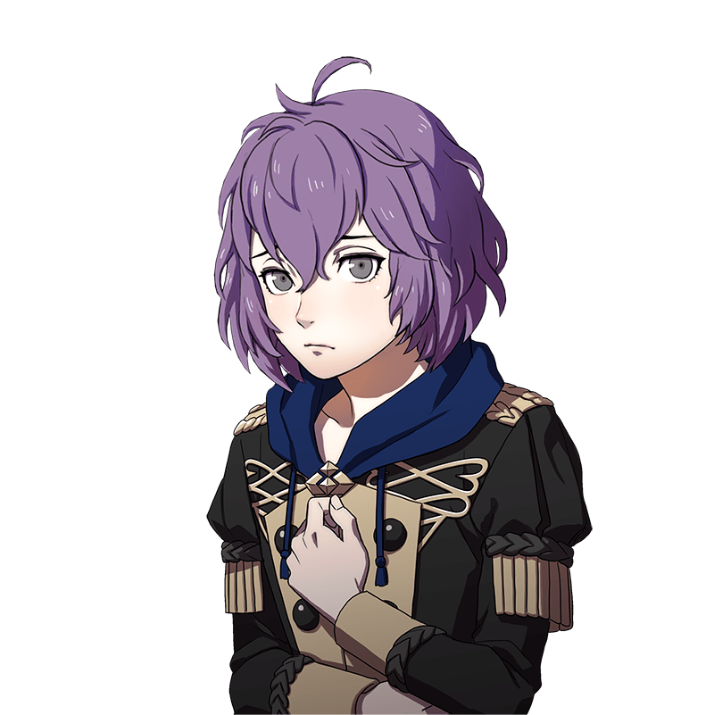
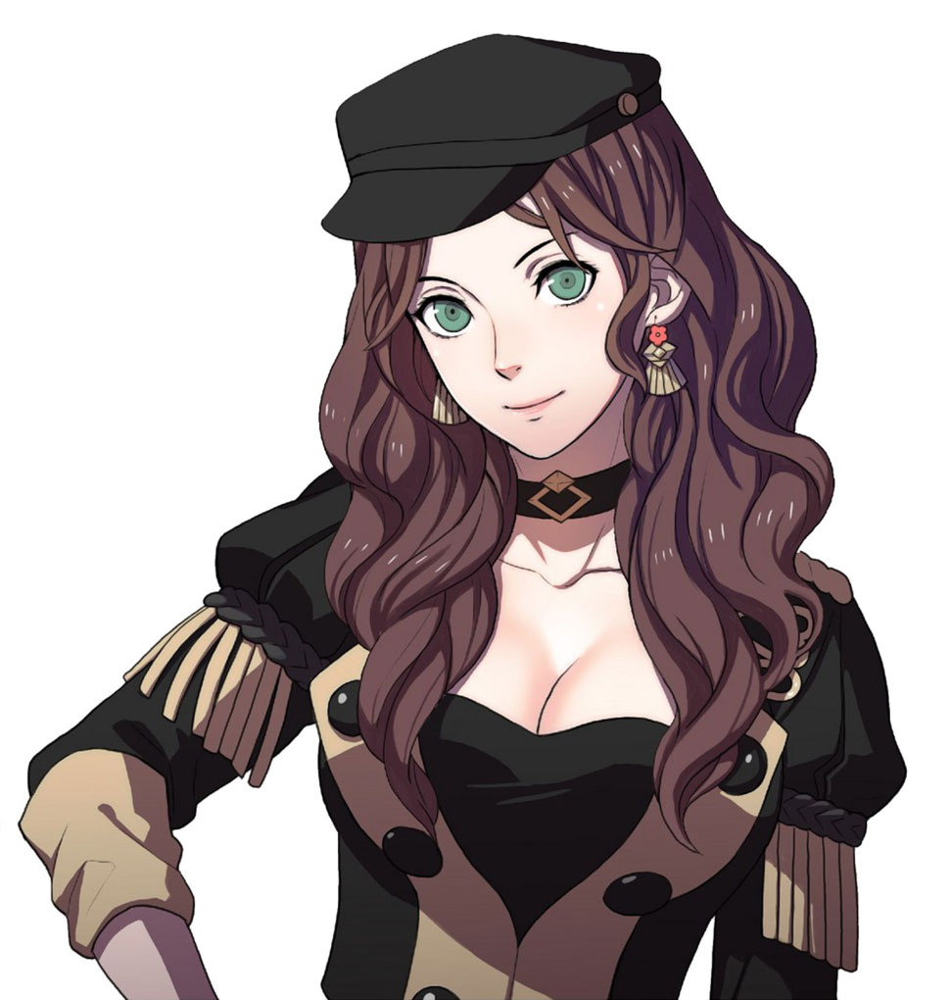
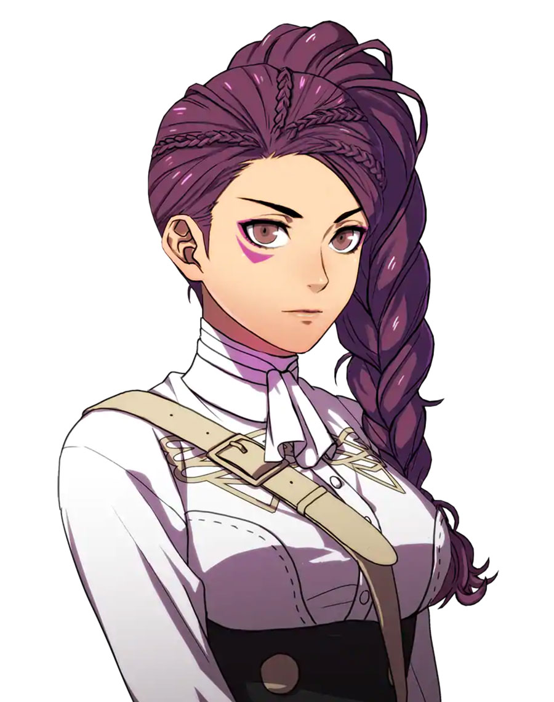

Edelgard von HresvelgEdelgard is the leader of the Black Eagel House, and a noble who is going to be the future emperess of her nation. |
 |
|  | Hubert von VestraHurbert is Edelgard's right-hand man. |
Ferdinand von AegirFerdinand is a noble who values acting like a proper noble and sees hims self as a rival to Edelgard. |
 |
|  | Linhardt von HevringLinhardt's only intrests are researching Crest and taking napping. |
Caspar von BergliesCaspar is someone who loves to train on his combat skills and improve himself. |
 |
|  | Bernadetta von VarleyBernadetta is a shy person who typically likes to shut herself in her bedroom and drawn and eat in her room. |
Dorothea ArnaultDorothea is a former opera singer and stage performer, and notably is one of the few commoners who attends at the officers academy. |
 |
|  | Petra MacnearyPetra is a princess from a foreign land, and has difficulty speaking the local language. |